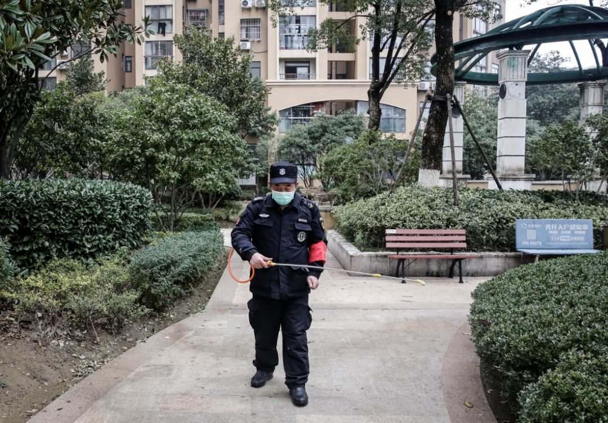
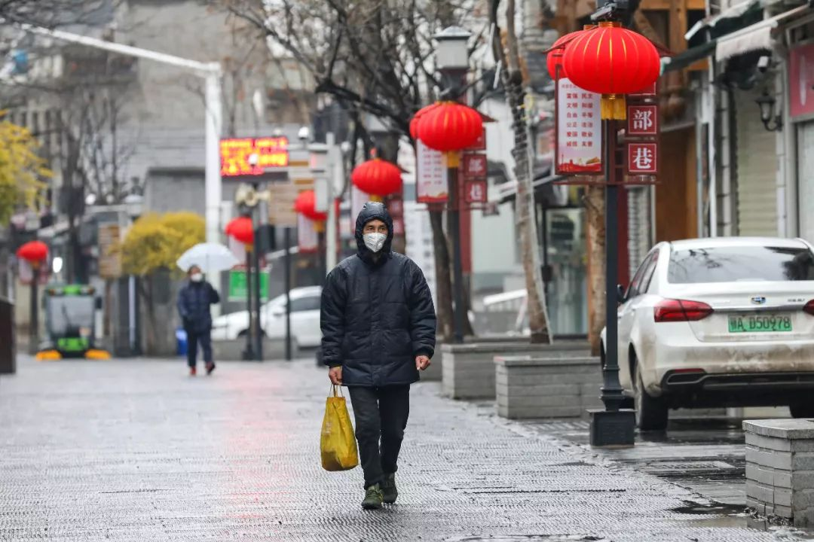

医护人员用文件袋自制护目镜——湖北县镇乡村防疫战
原文链接 备份链接 医疗防护资源不足是常态，各地资源调配需平衡，“灯下黑”区域渐次光亮，但少数地区的疫情宣传依旧不到位 外地务工返乡者最担忧的问题是年后经济收入断流、地域歧视，担心节后可能无法返工 本文首发于南方人物周刊 文 | 本刊记 …

截至1月28日，国家卫健委称，已向湖北派出近6000人的医疗队，支援湖北的疫情防治工作。全国各地医护人员和物资救济，正在缓慢改变武汉的应对现状。武汉也在不断总结和调整应对举措。随着各地输入病例不断增多，武汉防疫中的操作经验与教训，或许可以成为其它地区的借鉴。
在上海市公共卫生临床咨询专家缪晓辉看来，武汉新建医院扩充场地固然重要，但如何调配好现有资源，快速应对，其实更加重要。
记者 | 王海燕 王珊
各级医院的难题
▲▲▲
1月24日中午，武汉市新冠肺炎防控指挥部发布公告，对新冠肺炎实行分级诊疗，发热病人将由社区送往社区医疗中心，筛查分类，再往上级医院输送。但对一些病人来说，问题变得更棘手了。
徐彩家住武汉市江岸区塔子湖街道君安社区，她的公公、婆婆、丈夫分别在1月10号和15号开始发热，后来一直在医院打针，排号拍CT，全都显示双肺感染，且排除甲流、乙流和其它肺炎，但无法确诊新冠肺炎。1月23日，武汉封城，市内公共交通停止运行，徐彩家没有车，病人开始走路往返医院。因为已经出现呼吸带喘，2公里的路，徐彩的公公婆婆要走2个小时。

1月25日下午，徐彩的丈夫开始发烧，遵照分级诊疗政策，徐彩给所在的社区居委会打电话，但一整天占线，社区医院则无人接听。直到晚上10点，社区终于联系上徐彩，建议她自己克服一下，但此时的徐彩丈夫已经长时间高烧不退，退烧药也无济于事。
徐彩只能越过社区，直接拨打120。大年初一凌晨3：00，在和朋友一起连续拨打2个多小时后，徐彩终于找到一辆救护车，接走了她丈夫。第一站送到的武汉市天佑医院，一所新公布的定点医院，但救护车开过去后，医院才告知，还在清理床位，无法接诊。救护车只好把人送到十一医院，就是徐彩丈夫一直打针的定点医院，随后的肺部CT结果显示，徐彩丈夫的感染在加重。
但十一医院无法安排住院，一是没有床位，二是按照新的分级诊疗政策，住院必须从社区渠道上报，经确诊后统一安排。徐彩和朋友多方寻找关系，多家医院的答复都是如此。**徐彩只能反复催促社区，而社区唯一能给出的反馈是，已经申报了，不知道什么时候有结果。
**

远征 摄
1月26日上午，也就是分级诊疗方案公布两天过后，本刊记者随机拨打了多个区的10个街道办公开座机，其中一半无人接听，两个街道办可以帮忙安排车辆和上报，两个街道办表示负责分级诊疗信息传送，但无法保证车辆等。本刊记者还拨打了10个社区医院和居委会电话，共有3个单位接通，2个称有车，可跑通流程，1个称自己也搞不清楚情况。
实际上，在社区诊疗之前，已有一套分级诊疗流程，即原来普通医院收治的发热患者转往定点医院，定点医院的确诊重症患者转往金银潭医院。走通这里的每一环同样艰难，一家三甲医院医生告诉本刊，“宣布定点医院制度后，我们区所在的那家定点医院设置了一个条件，即必须是确诊患者。现在试剂盒检测名额非常少，按照这个标准，我们手里的病人一时半会根本出不去，但医生已经支援出去，我们也将定点医院其他科室病人收入我们医院，我们现在只能竭力保持正常运转。”
定点医院也有难题。一家定点医院的护士李彤告诉本刊，他们医院的呼吸科在12月底开始爆满，今年1月初，医院先后腾出了好几层病房，专门收治发热病人。1月21日晚，医院接到通知，成为新冠肺炎的定点医院，更多的病人立刻蜂拥而至，在门外排起了数百米的长队，难以消化。

作为目前最终端的金银潭医院，需要确诊和转院手续才能入住， “准入”严格，人数相对可控的，这里的问题是严重缺乏医护人员。林白在金银潭医院做护士，她和搭档们都是武汉市各医院志愿报名参加护理工作的。一层楼接近40个病人，白班护士只有8人，夜班护士只有3人，从打针，到吃、喝、拉、撒、洗，全都要负责，其中危重病房里，护士护理时除了全身防护服，还要随身携带重达10斤的通风循环系统，每次最长只能待3个小时左右，否则有休克的危险。
金银潭医院没有医护人员休息的地方，每天与危重症患者密切接触的医护人员，下班依然只能回家，做不到完全隔离。为了增加抵抗力，林白和同事每天都吃中药和胸肽腺，后者是一种预防作用不确定的免疫调节药。因为对金银潭医院的防护物资优先保障，她们的防护物资目前尚且充足。
突然成为定点医院
▲▲▲
各级医院都面临着巨大的物资短缺，与急剧增加的问诊病人有关，也与前期准备不足有关。李彤记得，1月22日，她们的医院成为定点医院，是突然宣布的。李彤所在科室不是呼吸科，但之前已收治了几个住院病人，高度疑似新冠肺炎患者。当时除了普通口罩，李彤所在科室，所有医护人员没有任何防护措施，属于“裸奔”状态。1月17号，医护人员中，已经有好几名疑似感染者，医护人员强烈申请防护用品，但得不到结果。过了几天，1月20日左右，护士们的布料质地护士帽才终于换成一次性帽子。
自己单位成为定点医院的消息，李彤和患者差不多是同时知道的。这意味着，络绎不绝的发热病人已经涌到了门口，医院还在手忙脚乱地加装隔离门，做传染病房改造。医院只有两天时间缓冲，两天里，李彤要给自己的病人办理出院或转院，只见缝插针地接受了唯一一场培训，学会了穿脱防护服。最终，防护用品1月23日晚才正式发下来。
匆忙的应对给医护人员带来了风险。1月23日，李彤所在医院做了一次医护人员全员查血，光李彤所在的科室，就有好几个人居家隔离，整个医院则有数十名医护人员需要住院治疗，医护人员短缺也就变得更加严重。**本刊记者采访的时候，李彤的一个同事已经连续上班18个小时。
**

吴宏是武汉一家三甲医院的管理者，他说，封城后，政府对医疗人员没作任何安排。吴宏家离医院很远，平时都是靠公共交通出行，封城第一天他光是打车就花了1个多小时。他的同事中，家稍微近的一些人只能骑自行车上班。医院最初连防护物资和基本民生物资运输通道都没有，直到多家医院呼吁，才打开一道专门运输通道。
和大多数医院一样，吴宏所在的医院急缺口罩，他打了个比方，比如一家医院500人，最低限度，1人1天1个口罩，5000个口罩也只够用10天。“如何才能一人一天一个口罩，怎么能够让医生一天好多台手术只用一个口罩？”为了减少使用，医院只能尽量给医务人员分工排班，减少非重点科室人员上班时间。这样一来，又加剧了医疗资源紧张的状况。
防护品紧缺，跟用量激增和春节工厂停产有关，平时医院很少囤积防护用品。但根据吴宏的了解，市政府层面是有储备的，之所以没有放出来，是因为武汉版“小汤山医院”即正在建设当中，需要满足新建医院的需求。目前，各大医院都在自己想办法向社会募捐防护物资。吴宏说，“募捐上，应该政府先拿出物资，（不足时）再向社会募集，现在反过来了。”
1月24日晚间，湖北省新冠肺防控工作第三场新闻发布会召开，湖北省药监局称，将“走访省内口罩、人体测温仪、抗病毒药品的生产企业和批发企业……确保疫情防控所需药品、医疗器械的质量安全和市场供应。”

实际上，与武汉相隔100多公里的仙桃市就是全国有名的一次性无纺布口罩生产基地。仙桃市的一位口罩代工厂管理者王名告诉本刊，就口罩而言，并没有囤积必要。他提到，无论民用还是医用口罩，只要有滤材原料，工艺都是一样的，投产很快。王名所在工厂的口罩主要用于出口，月产量最高可达到3000万个。目前，该厂存量原料可出品医用级别口罩几十万个，民用口罩700万个（防飞沫）。
王名所在厂小年之前就放假了，放假之前，他和周围的同行都接到过来自港澳地区的口罩订单，其中有人单个订单达200万个，王名所在工厂最后一批加急订单是1月初接到的。疫情爆发以来，王名和同行一直在观望是否开工。他们去为卫健委咨询过，如果产品有医药公司接收，可以办通行证，但王名更担心的是原料问题，他们的存量只够用几天，原料不属于防护用品，是无法办通行证的，到时候怎么进来，现在还没有答案。
缪晓辉是上海市公共卫生临床咨询专家，曾全程参与2003年上海市和北京小汤山SARS防控。注意到武汉要加建两座临时医院时，缪晓辉很疑惑。他说，2003年过后，全国的大型城市，基本上都新建了专门应对突发公共卫生事件的专科医院，加上原先肺科医院，所以至少有两家医院可以专门收治新冠肺炎感染者的医院，尤其是政府拨款于2003年之后新建的传染病医院，完全可以也必须承担类似于SARS期间小汤山医院的功能。
在他看来，新建医院扩充场地固然重要，但如何调配好现有资源，快速应对，其实更加重要。事实上，有金银潭医护人员告诉本刊，直到1月25日，金银潭医院尚有部分病区闲置，主要原因是医护人员不够。
避免恐慌性就医
▲▲▲
算下来，1月20日，钟南山在央视接受采访，1月22日，湖北省启动突发公共卫生事件II级应急响应，两天后升级为Ⅰ级响应，各省纷纷响应，短短一周之内，全中国的民众都经历了剧烈的情绪变化。那些处在暴风眼中心的武汉人感受可能尤其强烈。
高兰兰是武汉青山人，她怀疑，她爸爸是惊慌过度才发热的。12月末，通过医疗圈的朋友，高兰兰是最早知晓疫情并高度警觉的少数人之一，她早早买了口罩，在朋友圈发出警示，但她爸爸一直很淡定，直到1月23日，武汉已经封城，高兰兰跟朋友讨论疫情时，老人依然嘱咐她，不要造谣传谣。

老人的情绪转折发生在1月24日一早，当时高兰兰一个朋友的丈夫被隔离，打电话通知了高兰兰。头一天，高兰兰的邻居家有老人去世，虽然后来证实是流感引发，但大家都很怀疑，加上微信群里疯传的各类医护人员崩溃视频，老人的血压迅速飙升，虽然吃药后已恢复正常，但老人一直心慌难受。
老人是在1月25日发热的，体温在37.3和37.4之间徘徊，高兰兰第一反应是给社区打电话，想走分级诊疗流程，但社区工作人员告诉高兰兰，他们不是医生，没有防护，也没办法，建议高兰兰带着老人到青山区定点医院九医院去看门诊，或直接拨打120，并强调“打120一定可以住进医院”。
高兰兰很犹豫，她想在家给爸爸做隔离，但附近药店都关门了，如果去医院的话，她知道青山区的定点医院九医院早已人满为患。最后，还是一个公务员朋友告诉她，前几天去过一所大型三级医院收拾病床，就在高兰兰家附近，建议她去试试。高兰兰带着老人过去后，才知道这里的发热门诊一直开着，除了救护车进进出出，整个医院里非常冷清，高兰兰爸爸的前面，只有三个病人。

远征 摄
在医院，高兰兰的爸爸查了甲流、乙流，也拍了肺部CT，最后医生判断，除了支气管炎，老人其实没病，暂时不用开药。1月26日一早，老人体温恢复正常，但无论高兰兰如何安慰，老人始终惊恐不安，总认为自己处于潜伏期。和高兰兰父亲一样恐慌性就医的可能不少，就在高兰兰带父亲看病时，他们前面的一位中年妇女，一周之内已经连续去了三趟医院，医生再三嘱咐她，不要再来了，再拍CT，没病也要拍出病来。
这也是为什么，在缪晓辉看来，在面对如此复杂的疫情时，抢救病人是一个层面，但打好社区基础也非常重要。但打好社区基础，不是将筛查分流的决定交给社区，这既难以操作，民众也没有信任感，而是在防护齐全的基础上，挨家挨户上门，帮助政府做好流行病学调查、心理安抚和科普，“要做的是一些细致专业的工作，考验的是当地政府的行政智慧”，缪晓辉说。
根据本刊了解，截止1月26日，部分社区居委会和社区医院还没有任何通知，培训和防护物资也无从谈起，这意味着，**作为如今新冠肺炎分级诊疗中的最基础和重要的一环，社区委员会和医院，除了等待患者上门后，完成信息上报，实际能做的工作比较有限。
**

目前，武汉市基本已停掉所有交通，吴宏估计，这种措施之下，新增感染病例会立马减少，但病毒的潜伏期长达到两周，所以起码要经过两个观察周期，才能考虑是否解除一些措施。
作为一个对网络信息充分敏感的年轻人，在1月初，高兰兰非常惊慌，当时身边大多数人都不理解她。但1月23日封城那边，凌晨三点，好朋友给她打来电话，问她要不要买机票一起逃离武汉时，高兰兰看着身边的小家伙，想想隔壁房间的老人，再想想自己在武汉的30多年美好生活，最终放弃了还有余票的航班。
如今，身在武汉，和一个星期前难以捉摸的风平浪静不同，她每天都能看到汹涌的疫情信息，有疾病扩散、物资短缺的负能量，也有陌生人与陌生人守望相助的正能量。每一条信息都能让窥见一些真相，她反而冷静下来，并且劝说父亲，相信集体的力量。
（大力感谢片片在武汉的帮助和支持，吴宏、李彤、高兰兰、王名、林白为化名，实习生杨月、张佳婧对本文亦有贡献）
进展：1月26日晚，通过社区渠道，徐彩的丈夫终于排到一张床位，病床来自正是高兰兰家附近的那家三级医院。1月28日，徐彩的公公婆婆也在漫长的等待后，入院治疗。
在最艰难的时期，有朋友去医院接送她的丈夫，有陌生的网友在她家门口放下了防护用品、生活物资，还有众多邻居一起协助她，到处寻找就医渠道。当她的公公婆婆一直无法入院时，有人建议她带着公婆去社区委员会所在地守着，但她拒绝了，无论再艰难，她不希望自己的家人成为传染源。
作者档案

**王海燕
**
三联记者，比较喜欢采访，偶尔也喜欢写稿
26分钟前


三联生活周刊
个人微信公众号：解放路97号（jm-freetree）

**王珊
**
喜欢阳光，喜欢晒太阳，最近喜欢易建联。
26分钟前


三联生活周刊
个人微博：@小笨走走停
#我在疫情一线#
话题征稿持续进行中
《三联生活周刊》全媒体现面向所有读者征稿。包括但不限于：奋斗在疫情一线的医护人员、媒体同行们的故事，专业人士对接下来防疫工作的建议……
此次征稿形式不限：文字（1500～2500字为佳）、图片（原创拍摄）、音频视频（原创录制）都欢迎。大家携手，共度难关！注：请务必保证故事真实、客观，不造谣、不传谣。
《三联生活周刊》微信公号投稿邮箱：zhuangao@lifeweek.com.cn来稿格式：#我在疫情一线#➕标题《三联生活周刊》官方微博参与话题：#我在疫情一线#《三联生活周刊》中读APP投稿邮箱（音频投稿为主，5分钟以内为佳）zhongdu@lifeweek.com.cn
期待你的来稿！
⊙文章版权归《三联生活周刊》所有，欢迎转发到朋友圈，转载开白请联系后台。未经同意，严禁转载至网站、APP等。
嘉木木
微信扫一扫赞赏作者 赞赏
长按二维码向我转账
受苹果公司新规定影响，微信 iOS 版的赞赏功能被关闭，可通过二维码转账支持公众号。
原文链接 备份链接 医疗防护资源不足是常态，各地资源调配需平衡，“灯下黑”区域渐次光亮，但少数地区的疫情宣传依旧不到位 外地务工返乡者最担忧的问题是年后经济收入断流、地域歧视，担心节后可能无法返工 本文首发于南方人物周刊 文 | 本刊记 …
原文链接 备份链接 各方资源和关注的焦点是武汉，但在周边16座也因疫情而被封闭的城市里，他们正在经历着什么 文 |《财经》记者 房宫一柳 宋玮 黎诗韵 管艺雯 陈晶 余洋洋 实习生 马可欣 张凡 编辑 | 宋玮 1月24日，农历鼠年除夕 …
原文链接 备份链接 《人物》记者向多位寻求捐赠的医护人员咨询，他们均表示，很多医院的医用外科口罩库存量大概在一个星期左右，「平常有时口罩也戴一天，如果不去视察病房，有的科室没有戴口罩的需求。」用得不多、存量少，脆弱的库存和供应系统很快被疫 …
原文链接 备份链接 本文故事来自一名化名为“平安”的武汉大学生，记述了她从返乡、封城，再到过年所经历的种种。这个特殊的春节，焦虑与希望同在，寂静与喧嚣并存。身处「风暴中心」，从慌乱到乐观，她的心理发生了什么样的变化？让我们一起来看看她过去 …
原文链接 备份链接 1月25日，湖北省襄阳市宣布暂停长途客运，自此，湖北省其他地级市已全部封锁。封城后的武汉面临物资紧缺问题，一夜间，全国各地发起驰援武汉行动，不断输送医疗资源至武汉。 在武汉周边，一些小城市及乡镇吸纳大量从武汉归来的返乡 …